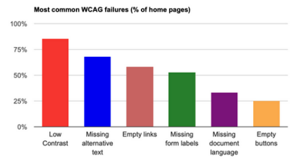

Bienvenue sur HandiA11y
HandiAl1y est un site spécialisé pour découvrir les bases de l'accessibilité web et les différents handicaps à prendre en compte.
Pourquoi 11y et pas A11é?
AT1É est une abréviation pour accessibilité où 11 représente le nombre de lettres entre le à et le é du mot accessibilité. Cette même abréviation dans sa version anglaise est plus jolie à l'oreille : A11Y
Quelle est l'origine du mot HANDICAP ?
Le mot handicap trouve son origine dans l'anglais médiéval. Il est dérivé de l'expression hand in cap, qui signifie main dans le chapeau. À l'époque, cette expression était utilisée dans les jeux de hasard pour indiquer qu'un joueur était désavantagé ou handicapé par rapport aux autres joueurs. Au fil du temps, le terme a été adopté dans d'autres contextes pour décrire une situation où une personne est désavantagée ou limitée dans ses capacités physiques, mentales ou sociales.
Le WCAG et les 4 principes A11y
Perceptible
Les informations et les composants de l'interface utilisateur doivent être perceptibles pour tous les utilisateurs, y compris ceux ayant des limitations sensorielles.
Utilisable
Les composants de l'interface utilisateur doivent être utilisables par tous les utilisateurs, y compris ceux ayant des limitations physiques ou cognitives.
Compréhensible
Les informations et les opérations doivent être compréhensibles pour tous les utilisateurs, y compris ceux ayant des limitations cognitives.
Robuste
Le contenu doit être robuste et fonctionnel sur différentes plateformes, y compris les technologies d'assistance, pour tous les utilisateurs.
| Principes | Critères | Correspondances | Objectifs |
|---|---|---|---|
| Perceptible | 1.1 | Alternatives textuelles | Fournir des alternatives textuelles pour tout contenu non textuel afin qu'il puisse être modifié dans d'autres formes comme les gros caractères, le braille, la parole, les symboles où un langage plus simple. |
| 1.2 | Médias temporels | Fournir des alternatives aux médias temporels. | |
| 1.3 | Adaptable | Créez du contenu qui peut être présenté de différentes manières (par exemple une mise en page plus simple) sans perdre d'informations ou de structure. | |
| 1.4 | Distinguable | Faciltez la visualisation et l'écoute du contenu par les utilisateurs, notamment en séparant le premier plan de l'arrière-plan | |
| Utilisable | 2.1 | Accessible au clavier | Rendre toutes les fonctionnalités disponibles à partir dun clavier. |
| 2.2 | Suffisament de temps | Donnez aux utilisateurs suffisamment de temps pour lire et utiliser le contenu | |
| 2.3 | Convulsions et réactions physiques | Concevoir des contenus qui ne provoquent pas de convulsions ou des réactions physiques comme des crises épileptiques (zones clignotantes et flashs) | |
| 2.4 | Navigable | Fournir des moyens d'aider les utilisateurs à naviguer, à trouver du contenu et à déterminer où ils se trouvent | |
| 2.5 | Entrées ciblables | Faciliter utilisation des fonctionnalités par les utilisateurs grâce à diverses entrées au-delà du clavier | |
| Compréhensible | 3.1 | Lisibilité du texte et de l'interface | Rendre le contenu du texte lisible et compréhensible. |
| 3.2 | Prévisible | Faites en sorte que les pages Web s'affichent et fonctionnent de manière prévisible. | |
| 3.3 | Assistance à la saisie | Aider les utilisateurs à éviter et à corriger les erreurs. | |
| Robuste | 4.1 | Compatible | Optimiser la compatibilité avec les agents utilisateurs actuels et futurs, y compris les technologies d'assistance. |
| Niveaux | Description |
|---|---|
| A | Accessibilité de base, répondant aux besoins essentiels des utilisateurs handicapés ou en situation de handicap |
| AA | Accessibilité avancée, garantissant une meilleure expérience pour la majorité des utilisateurs handicapés ou en situation de handicap |
| AAA | Accessibilité maximale, offrant une expérience optimale pour tous les utilisateurs, y compris les utilisateurs handicapés |
Vous pouvez tester la lecture des 2 tableaux avec JAWS ou NVDA pour voir s'ils sont accessibles !
WCAG 2.1 en VO
Most common WCAG failures by WebAIM
Graphique et tableaux des échecs les plus courants par WebAIM
| WCAG Failure Type | # of home pages | % of home pages |
|---|---|---|
| Low contrast text | 852,868 | 85.3% |
| Missing alternative text for images | 679,964 | 68% |
| Empty links | 581,408 | 58.1% |
| Missing form input labels | 528,482 | 52,8% |
| Missing document language | 329,612 | 33.1% |
| Empty buttons | 250,367 | 25% |